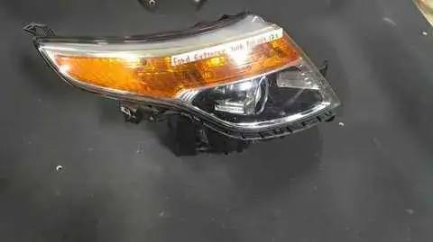

Piezas de carrocería para Ford Explorer
17 piezas disponibles hoy para Ford Explorer, cada una con su foto y su código: molduras de puerta (3), faros y lámparas delanteras (2), flares (2), estribos y rolling boards (2). Dinos el año de tu carro y te confirmamos si le sirve.
- Garantía de 3 días
- Foto real de cada pieza
- Efectivo, Yappy o ACH
- Lunes a sábado, 8:00 a. m. a 5:00 p. m.
Molduras de puerta para Ford Explorer 3
 MLP034Explorer2020-24 · lado derecho · original
MLP034Explorer2020-24 · lado derecho · original MLP033Explorer2011-15 · lado derecho · original
MLP033Explorer2011-15 · lado derecho · original MLP027Explorer2020-24 · lado derecho · original
MLP027Explorer2020-24 · lado derecho · originalFaros y lámparas delanteras para Ford Explorer 2
 170Explorer2011-15 · lado derecho · original
170Explorer2011-15 · lado derecho · original
171Explorer2011-15 · lado derecho · original FL067Explorer
FL067Explorer FL166Explorer
FL166Explorer RB049Explorer 6TA Generación
RB049Explorer 6TA Generación RB021Explorer
RB021Explorer 635Explorer
635Explorer DT178Explorer
DT178Explorer MR049Explorer
MR049Explorer DDI029Explorer
DDI029Explorer R004Explorer
R004Explorer DA008Explorer Limited
DA008Explorer Limited